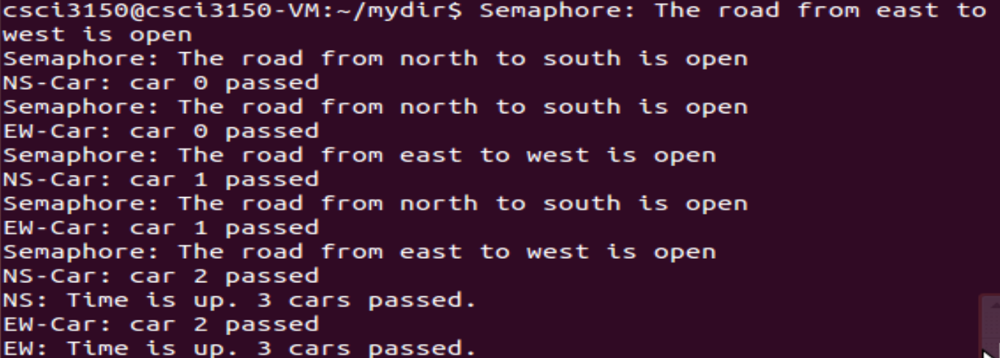
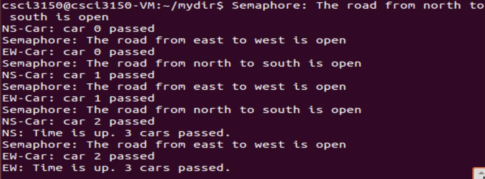

Exercise-1
NS-cars.c and EW-cars.c are two programs that simulate traffic control. When North-South cars past the crossroads, they should ensure that road from north to south is available, if north-south road is not available, they keep waiting. This is similar to East-West cars. Please add semaphore synchronization in these two programs so that North-South cars and Easts-West cars can past the crossroads alternately and there will not be car accident. Note that when north-south road is available, east-west road is not available.
The current result of these two programs is shown in figure 1, the expected result is shown in figure 2.

Figure 1. current result

Figure 2. Expected result
/*NS-cars.c*/
#include <stdio.h>
#include <stdlib.h>
int main(int argc, char * argv[])
{
int i, car=0, loop=3;
for(i=0;i<loop;i++){
printf("Semaphore: The road from north to south is open\n");
sleep(1);
printf("NS-Car: car %d passed\n",car++);
}
printf("NS: Time is up. %d cars passed.\n",car);
return 0;
}
/*EW-cars.c*/
#include <stdio.h>
#include <stdlib.h>
int main(int argc, char * argv[])
{
int i,car=0, loop=3;
for(i=0;i<loop;i++){
printf("Semaphore: The road from east to west is open\n");
sleep(rand()%2+1);
printf("EW-Car: car %d passed\n",car++);
}
printf("EW: Time is up. %d cars passed.\n",car);
return 0;
}